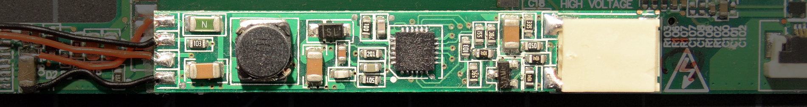

The "Fancyboost" Kit for Thinkpads
| fancyboost | notes | dim range | ~cost |
|---|---|---|---|
| stock (no mod) |
boost, 30-50V output, fault-sensing 8 LED strings minimum for 20V input |
6:1 | $55-70 |
| high-frequency PWM mod | 5.5:1 | ||
|  | |||
|
|||
{kind=link}
The 'Fancyboost' driver is another Chinese product where the maker has helpfully ground all identifying marks off the top of the controller IC. No matter; the driver is a boost configuration using the rather nice MP3388 controller IC [datasheet]. I've only seen the Fancyboost pre-grafted onto inverter boards in specialized kits for specific laptop models, usually replacing the coils under the copper-colored EMI shield. In the pic above, it's been fitted to an X61T inverter board as part of an X60T/X61T kit from xccfl.com.
There's apparently more than one PCB version with very slightly different component layout, but the schematic, component values, and component positions are the same. Thanks to FryPpy on forum.thinkpads.com for the heads-up and picture (local copy) of the slightly different board.
{kind=link}
{kind=link}
Above: Schematic of stock, unmodified "Fancyboost" LED driver board
These model-specific kits can be dropped right into a Thinkpad without any modification or soldering. The stock board is set up to use low-frequency PWM for a 6:1 brightness control range. If the low-frequency backlight flicker is annoying, the mod below alters the board to use high-frequency (24kHz) PWM instead, eliminating any hint of flicker but reducing the dimmable range slightly.
BTW, one odd thing to be aware of: Many of the LED strips included with Fancyboost kits have + and - color-coded backwards; the lower - LED lead is red and the upper + lead is black. I assume this was done to 'match' the CCFL wire harness where the red lead is on the bottom. LED backlight kits have arbitrary polarity in general, but this is the only one I've seen that color-codes polarity backwards.
Mod: High-frequency PWM
The MP3388 boost controller IC offers several features of which the Fancyboost board does not take advantage. The most interesting is the ability to translate a low frequency PWM brightness control input signal into a higher-frequency PWM backlight drive (see "PWM Dimming with Internal Triangle Waveform Generator" on the datasheet). That means the chip can accept the 200Hz PWM from the Thinkpad but control the backlight with a higher frequency like 24kHz.
The Fancyboost does not use this feature, instead implementing a weirdly complex low-frequency PWM setup. The good news is that it's easy to mod the Fancyboost to use high-frequency PWM if the low-frequency flicker is annoying.
Above: Schematic of the Fancyboost driver board modified for high-frequency PWM operation with a Thinkpad. Oddly, this improvement mostly involves removing components.
parts needed
- 10V 150pF capacitor (SMD 0603 recommended)
- 10V .1µF capacitor (SMD 0603 or 0805 recommended)
- A few centimeters of thin (roughly 30 gauge) wire
Feel free to use either surface mount or through-hole components as convenient. Capacitor tolerance values are not important, and they won't see more than about 5.5V.
modification process
- Replace the 10kΩ resistor (marked 103) indicated in the image below with a 150pF ceramic capacitor.
- Remove all the highlighted components marked 'step 2'.
{kind=link}
- Solder a .1µF (104) ceramic cap into the position indicated in the picture below. The left side of the capacitor reuses the right-hand pad from a removed 100kΩ (104) resistor, and the right side is soldered to the lower lead of the large ceramic output capacitor.
- Solder a wire from the controller IC pin 6 (or the exposed copper pad slightly below and to the right of the pin) to the lowermost unused solder pad just ot the left of the output connector. This was the lower pad of another removed 100kΩ (104) resistor; consult the image below if there's any confusion.
{kind=link}
Through-hole components also work perfectly well, though some care must be taken not to lift the copper pads off the driver PCB. If you do use through-hole components, it's a good idea to glue them securely into place with a blob of CA glue after testing.
{kind=link}
Above: The capacitors added in step 1 and step 3 can be through-hole varieties. It's harder to be neat, but neatness is not really required. Giant solder blobs are optional :-)
And with that, the backlight switching frequency is increased to approximately 24kHz and the board is ready for use. Note that the brightness adjustment range is reduced slightly; we lose about half a 'step' at the top and bottom of the range.
[Index]
-
Converting ThinkPads to LED Backlighting
FAQ and general background information for converting classic ThinkPads from CCFL to LED backlighting
-
Kits and Parts for LED Backlight Conversions
Everything needed to update a CCFL ThinkPad to LED
-
Installing the LED Backlight
Removing the CCFL, preparing the panel for easy LED installation, fitting the LED strip for optimal brightness and color
- Other Assorted Technical Information and Backlight Mods